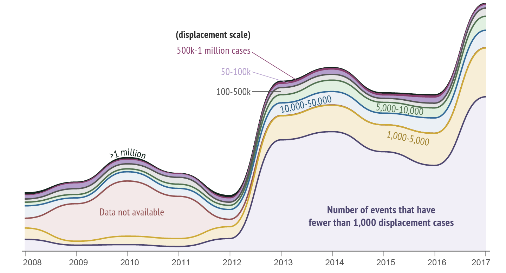
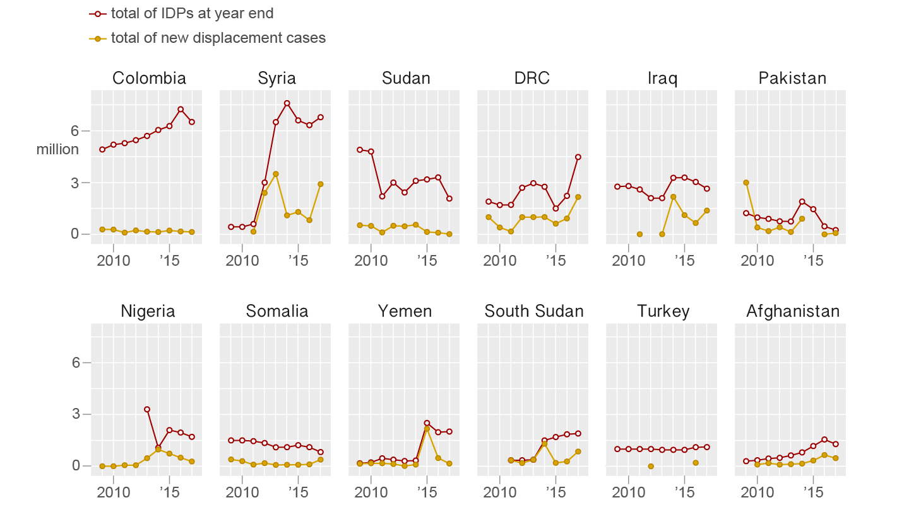

Internal Displacement, what does it mean?
It describes the situation of people who have been forced to leave their homes but have not left their country. In 2017, there were 30.6 million new internal displacements across 143 countries and territories. Millions more live in situations of protracted internal displacement or face chronic displacement risk.
IDMC has increased the scope of monitoring internal displacement, but a number of gaps remain, including limited geographic coverage. The data presented on this page are estimates.
Unevenly distributed
The global distribution of internal displacement has been uneven over the past decade. The levels of severity vary hugely between regions and countries.

Most conflict-induced displacements took place in Sub-Saharan Africa and the Middle East. Disaster-induced displacements were prevalent in East Asia and the Pacific, South Asia and the Americas.
In East Asia, some of the highest levels of disaster displacement came about as a result of earthquakes. The devastating 2008 Sichuan Earthquake and 2010 Yushu Earthquake in China, as well as the 311 Eastern Japan Earthquake, all displaced millions of people.
In South Asia, sudden-onset disasters during the monsoon season were the major triggers. Similarly, the Atlantic hurricane season accounted for a large number of displacement in the Americas.
Small-scale displacements by disaster
IDMC has monitored a steady increase of small-scale disaster-triggered events. In 2017, there were 768 events that had fewer than 5000 displacement cases, which was more than six times the number in 2008.
Disasters affect high and low-income countries alike, but conflicts and violence often hit a few countries or regions the hardest. For example, Sub-Saharan Africa accounts for only 14 percent of the world's population, but almost half of new conflict-induced displacements took place in the region in 2017.
Peace process and ceasefires do not always have the desired outcome, which is to reduce violence, thus reducing the risk of further displacement and creating an environment that allows IDPs to achieve durable solutions. This was clearly demonstrated in 2017 in CAR, Colombia and Syria, where displacement continued despite ceasefires and peace-building efforts.
Large-scale displacements by conflict and violence
Among countries with the largest conflict displacement, Syria, DRC and Iraq have seen more than one million new displacement cases in 2017, which the UN classified as Level 3 emergencies. There was also a sharp increase in Somalia, more than three times the figure for 2016. In South Sudan, conflict continued to drive extreme food insecurity throughout the country, causing significant new displacements.
Although displacement has reached unprecendented levels in some countries, there is a lack of political will to protect internally displaced persons and address root causes of displacement.
Resources:
IDMC Grid 2018 Report, link